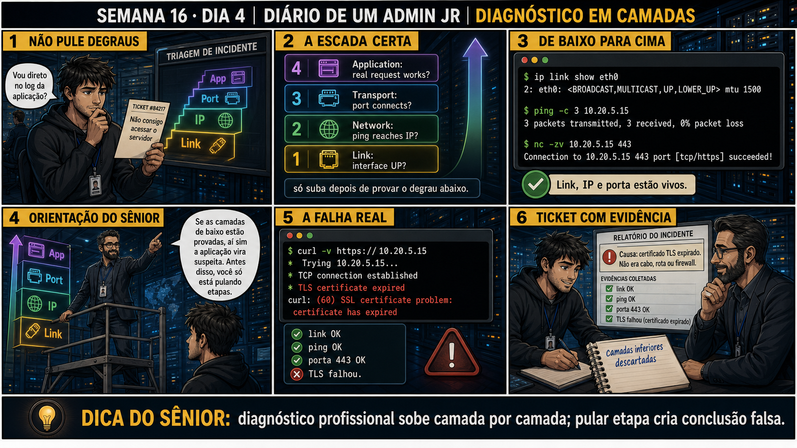

<!doctype html><html lang='pt-BR'><head><script>(function(){try{if(localStorage.getItem('admin-jr-theme')==='light'){document.documentElement.setAttribute('data-theme','light')}}catch(e){}})()</script><meta charset='utf-8'><meta name='viewport' content='width=device-width,initial-scale=1'><title>Semana 16 · Dia 4 — Diagnóstico em Camadas | Diario de um Admin Jr.</title><style>
:root{--bg:#080c12;--panel:#111925;--panel2:#172233;--line:#344762;--ink:#f4f7fb;--muted:#b7c2d0;--gold:#f6b91a;--cyan:#36c9e8;--green:#35d07f;--red:#ff5d68;--purple:#2563eb}
*{box-sizing:border-box}html{scroll-behavior:smooth}body{margin:0;background:var(--bg);color:var(--ink);font:17px/1.58 Arial,sans-serif;letter-spacing:0}
.top{position:sticky;top:0;z-index:5;background:#050607;border-bottom:3px solid var(--gold);padding:12px 4vw;display:flex;justify-content:space-between;gap:20px;align-items:center;flex-wrap:wrap}
.brand{font-weight:900;color:var(--gold);font-size:14px}nav a,nav span{color:var(--ink);margin-left:18px;text-decoration:none;font-weight:700;font-size:14px}nav span{opacity:.4}
.progress{width:min(1180px,92vw);margin:14px auto 0;display:flex;gap:4px}
.progress .dot{flex:1;height:5px;border-radius:3px;background:var(--line)}
.progress .dot.done{background:var(--green)}.progress .dot.now{background:var(--gold)}
.bridge{width:min(1180px,92vw);margin:10px auto 0;background:#0d1f2a;border:1px solid #1f4e63;border-left:5px solid var(--cyan);border-radius:6px;padding:14px 18px;font-size:14.5px;color:#cfeaf5}
.bridge b{color:var(--cyan)}
.privilege{width:min(1180px,92vw);margin:12px auto 0;background:#1a1408;border:1px solid #7a5a12;border-left:5px solid var(--gold);border-radius:6px;padding:14px 18px;font-size:14.5px;color:#f4d98a}
.privilege b{color:var(--gold)}
.hero{padding:26px max(4vw,20px) 26px;max-width:1500px;margin:auto}.eyebrow{color:var(--cyan);font-weight:900;text-transform:uppercase}.hero h1{font-size:clamp(30px,5vw,56px);line-height:1.05;margin:8px 0 14px;max-width:1100px}.hero p{font-size:19px;color:var(--muted);max-width:900px}.philosophy{color:#050607;background:var(--gold);font-weight:900;padding:10px 16px;display:inline-block}
.comic{display:block;width:min(1500px,94vw);height:auto;margin:18px auto 0;border:4px solid #f5f5f0;border-radius:4px}
.scene-strip{width:min(1180px,92vw);margin:0 auto 34px;display:grid;grid-template-columns:repeat(auto-fit,minmax(230px,1fr));gap:10px}
.scene-chip{background:var(--panel2);border:1px solid var(--line);border-top:3px solid var(--gold);border-radius:0 0 6px 6px;padding:12px 14px;font-size:13px}
.scene-chip b{color:var(--gold);display:block;margin-bottom:4px;font-size:13.5px}
.scene-chip .more{color:var(--cyan);cursor:pointer;font-weight:700;font-size:12px;text-decoration:underline;text-underline-offset:3px}
.wrap{width:min(1180px,92vw);margin:auto}.section{padding:34px 0;border-top:1px solid var(--line)}h2{font-size:28px;color:var(--gold);margin:0 0 16px}h3{color:var(--cyan);margin:10px 0}
.box{background:var(--panel);border:1px solid var(--line);border-left:6px solid var(--gold);padding:22px;margin:16px 0}
.grid{display:grid;grid-template-columns:repeat(2,minmax(0,1fr));gap:16px}
table{width:100%;border-collapse:collapse;background:var(--panel)}th{background:var(--gold);color:#050607;text-align:left}th,td{padding:12px;border:1px solid var(--line);vertical-align:top}
code,pre{font-family:Consolas,monospace}code{color:#a8f5c6}pre{background:#020507;color:#a8f5c6;border:1px solid var(--line);padding:20px;overflow:auto;white-space:pre-wrap}
pre.err{border-color:var(--red)}
.steps{counter-reset:item;list-style:none;padding:0}.steps li{counter-increment:item;background:var(--panel);border-left:5px solid var(--cyan);margin:10px 0;padding:14px 16px}
.steps li:before{content:counter(item);display:inline-grid;place-items:center;width:30px;height:30px;background:var(--cyan);color:#051018;font-weight:900;margin-right:12px}
.warning{border-left-color:var(--red);background:#1b1117}.validation{border-left-color:var(--green)}
footer{margin-top:50px;padding:26px 4vw;background:#050607;color:var(--muted);text-align:center;font-size:13px}
.hint{border-bottom:1px dotted var(--cyan);color:var(--cyan);cursor:pointer;position:relative;font-weight:700}
.hint:hover::after{content:attr(data-tip);position:absolute;bottom:135%;left:0;background:#0d1522;border:1px solid var(--gold);padding:9px 13px;border-radius:6px;font-size:13px;width:240px;z-index:15;color:var(--ink);box-shadow:0 6px 18px rgba(0,0,0,.5);font-weight:400}
.hint:hover::before{content:'';position:absolute;bottom:118%;left:14px;border:6px solid transparent;border-top-color:var(--gold);z-index:15}
.glossary-trigger{border:0;background:var(--panel2);border:1px solid var(--line);color:var(--cyan);font:inherit;font-weight:800;padding:10px 14px;border-radius:6px;cursor:pointer;text-align:left}
.glossary-trigger:hover{border-color:var(--cyan)}
.glossary-modal{width:min(620px,92vw);border:2px solid var(--gold);background:#0d1522;color:var(--ink);padding:26px;border-radius:8px}
.glossary-modal::backdrop{background:rgba(0,0,0,.82)}
.glossary-modal h2{padding-right:42px;font-size:22px}
.glossary-close{position:absolute;right:18px;top:14px;border:0;background:none;color:var(--muted);font-size:24px;font-weight:900;cursor:pointer}
.glossary-definition{background:#050910;border-radius:4px;padding:16px;margin-bottom:10px}
.glossary-analogy{background:#162338;border-left:5px solid var(--cyan);padding:16px;border-radius:0 4px 4px 0}
.recall{background:var(--panel);border:1px solid var(--line);border-left:5px solid var(--purple);padding:20px;border-radius:0 6px 6px 0}
.recall-btn{background:#221338;border:1px solid var(--purple);color:#e9d5ff;padding:9px 16px;border-radius:6px;font-weight:700;cursor:pointer;margin-top:10px}
.recall-btn:hover{background:var(--purple);color:#1a0a2e}
.recall-answer{display:none;margin-top:14px;padding-top:14px;border-top:1px dashed var(--line);color:var(--muted)}
.recall-answer.show{display:block}
.quiz-opt{display:block;width:100%;text-align:left;background:#090d13;border:2px solid var(--line);color:var(--ink);padding:16px 18px;border-radius:6px;cursor:pointer;font-size:16px;margin-bottom:10px;font-family:inherit}
.quiz-opt:hover{border-color:var(--cyan)}
.quiz-opt.disabled{opacity:.4;pointer-events:none}
.quiz-opt b{display:inline-block;min-width:28px;color:var(--cyan)}
.quiz-result{display:none;border-radius:6px;padding:18px 20px;margin-top:14px;border:2px solid var(--line)}
.quiz-result.show{display:block}
.quiz-result.correct{border-color:var(--green);background:#0d1a14}
.quiz-result.wrong{border-color:var(--red);background:#1a0d10}
.quiz-result-head{font-weight:900;margin-bottom:8px}
.quiz-result.correct .quiz-result-head{color:var(--green)}
.quiz-result.wrong .quiz-result-head{color:var(--red)}
.retry-btn{background:transparent;border:1px solid var(--line);color:var(--muted);padding:7px 14px;border-radius:5px;font-size:13px;cursor:pointer;margin-top:12px}
.retry-btn:hover{border-color:var(--cyan);color:var(--cyan)}
.testking-tag{display:inline-block;background:#2563eb;color:#fff;font-size:11px;font-weight:900;padding:3px 9px;border-radius:4px;letter-spacing:.5px;margin-bottom:10px}
.lab-row{display:flex;gap:12px;align-items:flex-start}
.lab-box{width:22px;height:22px;flex:none;border:2px solid var(--cyan);border-radius:5px;cursor:pointer;display:flex;align-items:center;justify-content:center;color:var(--green);font-weight:900;margin-top:2px}
.steps li.done{opacity:.55}.steps li.done .lab-text{text-decoration:line-through}
.lab-expect{margin-top:8px;padding:10px 12px;background:#050910;border-left:3px solid var(--green);border-radius:0 4px 4px 0;font-size:13px;color:var(--muted)}
.lab-expect b{color:var(--green)}
.mentor-slot{margin-top:14px;padding:14px 16px;background:#0d1522;border:1px dashed #3a4a63;border-radius:6px;font-size:13px;color:var(--muted);display:flex;gap:10px;align-items:flex-start}
.mentor-slot b{color:var(--purple)}
.checkpoint{background:#221a08;border:1px solid #7a5a12;border-left:5px solid var(--gold);border-radius:0 6px 6px 0;padding:14px 18px;font-size:13.5px;color:#f4d98a;margin-top:16px}
@media(max-width:760px){.grid{grid-template-columns:1fr}.top{position:static;display:block}nav{margin-top:8px}.hero h1{font-size:32px}.comic{width:100%;border-width:2px}.wrap{width:94vw}.hint:hover::after{width:180px;left:-40px}}

.theme-toggle{background:var(--panel2);border:1px solid var(--line);color:var(--ink);font-size:17px;width:38px;height:38px;border-radius:8px;cursor:pointer;display:flex;align-items:center;justify-content:center;flex:none;line-height:1}
.theme-toggle:hover{border-color:var(--gold)}

[data-theme="light"]{
  --bg:#f8fafc;
  --panel:#ffffff;
  --panel2:#f1f5f9;
  --line:#cbd5e1;
  --ink:#0f172a;
  --muted:#475569;
  --gold:#1e40af;
  --cyan:#0284c7;
  --green:#16a34a;
  --red:#dc2626;
  --purple:#2563eb;
}

[data-theme="light"] body{background:var(--bg);color:var(--ink)}
[data-theme="light"] .top{background:#ffffff;border-bottom:3px solid var(--gold)}
[data-theme="light"] .brand{color:var(--gold)}
[data-theme="light"] .top nav a{color:var(--ink)}
[data-theme="light"] .top nav a:hover{color:var(--cyan)}
[data-theme="light"] .bridge{background:#f0fdf4;border-color:#bbf7d0;border-left:5px solid var(--green);color:#14532d}
[data-theme="light"] .bridge b{color:#15803d}
[data-theme="light"] .privilege{background:#eff6ff;border-color:#bfdbfe;border-left:5px solid var(--gold);color:#1e3a8a}
[data-theme="light"] .privilege b{color:var(--gold)}
[data-theme="light"] .hint:hover::after{background:#ffffff;border-color:var(--gold);color:var(--ink);box-shadow:0 6px 18px rgba(0,0,0,.12)}
[data-theme="light"] .hint:hover::before{border-top-color:var(--gold)}
[data-theme="light"] .scene-chip{background:var(--panel2);border-color:var(--line);border-top:3px solid var(--gold)}
[data-theme="light"] .scene-chip b{color:var(--gold)}
[data-theme="light"] .scene-chip .more{color:var(--cyan)}
[data-theme="light"] .glossary-trigger{background:var(--panel2);border-color:var(--line);color:var(--cyan)}
[data-theme="light"] .glossary-modal{background:#ffffff;border-color:var(--gold);color:var(--ink)}
[data-theme="light"] .glossary-definition{background:var(--panel2);color:var(--ink)}
[data-theme="light"] .glossary-analogy{background:#eff6ff;border-left:5px solid var(--cyan);color:#1e3a8a}
[data-theme="light"] .recall{background:var(--panel);border-color:var(--line);border-left:5px solid var(--cyan)}
[data-theme="light"] .recall-btn{background:#e0f2fe;border-color:var(--cyan);color:#0369a1}
[data-theme="light"] .recall-btn:hover{background:var(--cyan);color:#ffffff}
[data-theme="light"] .recall-answer{border-top-color:var(--line);color:var(--muted)}
[data-theme="light"] .quiz-opt{background:#ffffff;border-color:var(--line);color:var(--ink)}
[data-theme="light"] .quiz-opt:hover{border-color:var(--cyan)}
[data-theme="light"] .quiz-opt b{color:var(--cyan)}
[data-theme="light"] .quiz-result{border-color:var(--line);background:var(--panel2)}
[data-theme="light"] .quiz-result.correct{background:#f0fdf4;border-color:var(--green)}
[data-theme="light"] .quiz-result.wrong{background:#fef2f2;border-color:var(--red)}
[data-theme="light"] .quiz-result.correct .quiz-result-head{color:var(--green)}
[data-theme="light"] .quiz-result.wrong .quiz-result-head{color:var(--red)}
[data-theme="light"] .quiz-result-body{color:var(--ink)}
[data-theme="light"] .quiz-ref{color:var(--muted)}
[data-theme="light"] .retry-btn{border-color:var(--line);color:var(--muted)}
[data-theme="light"] .retry-btn:hover{border-color:var(--cyan);color:var(--cyan)}
[data-theme="light"] .steps li{background:var(--panel);border-left-color:var(--cyan);color:var(--ink)}
[data-theme="light"] .steps li:before{background:var(--cyan);color:#ffffff}
[data-theme="light"] .lab-expect{background:var(--panel2);border-left-color:var(--green);color:var(--muted)}
[data-theme="light"] .lab-expect b{color:var(--green)}
[data-theme="light"] .lab-why{background:#eff6ff;border-left-color:var(--cyan);color:#1e3a8a}
[data-theme="light"] .lab-why b{color:var(--cyan)}
[data-theme="light"] .lab-warn{background:#fef2f2;border-left-color:var(--red);color:#991b1b}
[data-theme="light"] .lab-warn b{color:var(--red)}
[data-theme="light"] .mentor-slot{background:var(--panel2);border-color:var(--line);color:var(--muted)}
[data-theme="light"] .mentor-slot b{color:var(--cyan)}
[data-theme="light"] .checkpoint{background:#eff6ff;border-color:#bfdbfe;border-left:5px solid var(--gold);color:#1e3a8a}
[data-theme="light"] .checkpoint b{color:var(--gold)}
[data-theme="light"] .story{background:var(--panel);border-color:var(--line);color:var(--ink)}
[data-theme="light"] .story b{color:var(--cyan)}
[data-theme="light"] .box{background:var(--panel);border-color:var(--line);border-left-color:var(--gold);color:var(--ink)}
[data-theme="light"] .warning{background:#fef2f2;border-left-color:var(--red);color:#991b1b}
[data-theme="light"] .validation{background:#f0fdf4;border-left-color:var(--green);color:#14532d}
[data-theme="light"] table{background:var(--panel)}
[data-theme="light"] th{background:#e0e7ff;color:#1e1b4b;border-color:var(--line)}
[data-theme="light"] td{border-color:var(--line);color:var(--ink)}
[data-theme="light"] code{color:var(--green)}
[data-theme="light"] pre{background:#0f172a;color:#a8f5c6;border-color:#334155}
[data-theme="light"] pre code{color:#a8f5c6}
[data-theme="light"] h2{color:var(--gold)}
[data-theme="light"] h3{color:var(--cyan)}
[data-theme="light"] .testking-tag{background:#2563eb;color:#ffffff}
[data-theme="light"] footer{background:var(--panel2);border-top:1px solid var(--line);color:var(--muted)}

</style></head>
<body>
<header class='top'>
  <div class='brand'>DIARIO DE UM ADMIN JR. | FASE 2 — REDES, DO IP AO DIAGNÓSTICO</div>
  <button class='theme-toggle' onclick='toggleTheme()' aria-label='Alternar tema claro/escuro' title='Alternar tema claro/escuro'>🌓</button>
  <nav><a href='DIA_03_HARDENING_SSH_PERMITROOTLOGIN.html'>← Semana 16, Dia 3</a><a href='#'>Semana 16</a><a href='DIA_05_MISSAO_INTEGRADORA_FASE2.html'>Dia 5 →</a></nav>
</header>
<div class="progress">
  <div class="dot done"></div><div class="dot done"></div><div class="dot done"></div><div class="dot now"></div><div class="dot"></div>
</div>

<div class="bridge">🔗 <b>Conecta com a Fase 2 inteira:</b> Semana 13 (camadas TCP/IP), Semana 14 (DNS/DHCP),
Semana 15 (firewall) — cada semana usou uma versão desse método sem nomeá-lo formalmente. Hoje ele ganha nome
e formato oficial: diagnóstico sobe camada por camada, de baixo pra cima, nunca pulando degraus.</div>

<div class="privilege">🔓 <b>Privilégio de hoje: formalizar o método que você já vem usando.</b> Você ganha a
escada completa (Link → Network → Transport → Application) como um processo nomeado e repetível, e a
disciplina de só suspeitar da aplicação depois que TODAS as camadas de baixo já foram provadas saudáveis.</div>

<main>
<section class='hero'>
  <div class='eyebrow'>Semana 16 · Dia 4 | Nível Júnior — Redes</div>
  <h1>Diagnóstico em Camadas</h1>
  <p>diagnóstico profissional sobe camada por camada; pular etapa cria conclusão falsa</p>
  <span class='philosophy'>ANTES DE ALTERAR, OBSERVE. DEPOIS DE ALTERAR, VALIDE.</span>
</section>



<div class="scene-strip" id="sceneStrip"></div>

<div class='wrap'>

<section class='section'>
  <h2>1. O chamado</h2>
  <div class='box'>Ticket #84217: "Não consigo acessar o servidor." "Vou direto no log da aplicação?" —
  reflexo de pular direto pro topo da escada, sem provar os degraus de baixo primeiro. O método certo sobe
  de Link → Network → Transport → Application, só suspeitando da aplicação depois de provar as outras três.</div>
  <p style="color:var(--muted);font-size:13.5px">💡 Passa o mouse nas palavras destacadas pra ver uma dica rápida — clica se quiser a explicação completa com analogia.</p>
</section>

<section class='section'>
  <h2>2. Antes de ver as opções — tenta responder</h2>
  <div class="recall">
    🧠 <b>Recall ativo:</b> quais são as quatro camadas da escada de diagnóstico, e qual pergunta cada uma
    responde?
    <br><button class="recall-btn" id="recallBtn" onclick="showRecall()">Tentei lembrar — ver resposta</button>
    <div class="recall-answer" id="recallAns">
      1)
      <span class="hint" data-tip="Primeira camada: a interface de rede está fisicamente ativa e pronta?" onclick="openGlossary(0)">Link</span>
      — interface UP? 2) Network — ping alcança o IP? 3) Transport — porta conecta? 4)
      <span class="hint" data-tip="Última camada: o pedido real da aplicação (como uma requisição HTTP/HTTPS) funciona de fim a fim?" onclick="openGlossary(1)">Application</span>
      — o pedido real funciona? Só suba pro próximo degrau depois de provar o de baixo — pular direto pra
      aplicação sem confirmar as outras camadas cria uma conclusão falsa.
    </div>
  </div>
</section>

<section class='section' id='questao'>
  <span class="testking-tag">QUESTÃO 1 de 3</span>
  <h2>3. Questão comentada — clica numa alternativa</h2>
  <div class='box question'>ip link show mostra UP. ping -c 3 10.20.5.15 mostra 0% de perda. nc -zv 10.20.5.15
  443 mostra succeeded. curl -v https://10.20.5.15 mostra "SSL certificate problem: certificate has expired".
  Qual é a conclusão correta?</div>
  <div id="quizArea1">
    <button class="quiz-opt" onclick="answerQuiz(this,'quizResult1',true,'Link, Network e Transport foram todos confirmados saudáveis (interface UP, ping OK, porta conecta) — a falha está especificamente na camada de Application, e mais especificamente ainda: um certificado TLS expirado. Não é cabo, rota ou firewall — as três camadas inferiores já foram descartadas com evidência.')"><b>A</b> A causa é um certificado TLS expirado — não é cabo, rota ou firewall, já que as três camadas inferiores foram confirmadas saudáveis</button>
    <button class="quiz-opt" onclick="answerQuiz(this,'quizResult1',false,'O ping já confirmou 0% de perda — a rede está alcançável; o problema identificado está especificamente na camada de aplicação (certificado), não na camada de rede.')"><b>B</b> O problema é de rede — é preciso verificar a rota entre os dois hosts</button>
    <button class="quiz-opt" onclick="answerQuiz(this,'quizResult1',false,'A porta 443 já respondeu com sucesso (nc -zv succeeded) — o firewall não está bloqueando essa porta; o problema real está um nível acima, na camada de aplicação.')"><b>C</b> O firewall está bloqueando a porta 443 — é preciso adicionar uma regra de exceção</button>
    <button class="quiz-opt" onclick="answerQuiz(this,'quizResult1',false,'A evidência (curl mostrando certificate has expired) já aponta especificamente para o certificado TLS — trocar o cabo de rede física não tem relação nenhuma com essa causa identificada.')"><b>D</b> É um problema físico — o cabo de rede precisa ser verificado</button>
  </div>
  <div id="quizResult1" class="quiz-result">
    <div class="quiz-result-head"></div>
    <div class="quiz-result-body"></div>
    
    <div class="quiz-ref">💡 <b>Analogia do Sênior para Fixar:</b> O princípio fundamental de 04 DIAGNOSTICO CAMADAS é como o alicerce de sustentação de um viaduto: garante que a estrutura de comunicação suporte alto tráfego sem colapsar.</div>
    <button class="retry-btn" onclick="resetQuiz(this,'quizArea1','quizResult1')">Tentar de novo</button>
  </div>
</section>

<section class='section'>
  <h2>4. Decodificador de conceitos</h2>
  <p style="color:var(--muted)">Clica em qualquer termo pra ver a definição completa e uma analogia do dia a dia:</p>
  <div class="grid" id="glossaryTriggers"></div>
</section>

<section class='section'>
  <h2>5. Ferramentas e leitura da evidência</h2>
  <table><thead><tr><th>Camada</th><th>Comando</th><th>Pergunta respondida</th></tr></thead><tbody>
    <tr><td>1. Link</td><td><code>ip link show eth0</code></td><td>A interface está UP?</td></tr>
    <tr><td>2. Network</td><td><code>ping -c 3 IP</code></td><td>O IP responde?</td></tr>
    <tr><td>3. Transport</td><td><code>nc -zv IP porta</code></td><td>A porta conecta?</td></tr>
    <tr><td>4. Application</td><td><code>curl -v https://IP</code></td><td>O pedido real funciona?</td></tr>
  </tbody></table>
  <pre>$ ip link show eth0
2: eth0: <BROADCAST,MULTICAST,UP,LOWER_UP> mtu 1500

$ ping -c 3 10.20.5.15
3 packets transmitted, 3 received, 0% packet loss

$ nc -zv 10.20.5.15 443
Connection to 10.20.5.15 443 port [tcp/https] succeeded!

$ curl -v https://10.20.5.15
* Trying 10.20.5.15...
* TCP connection established
* TLS certificate expired
curl: (60) SSL certificate problem: certificate has expired

--- causa identificada ---
Link OK. Network OK. Transport OK. Application FALHOU (certificado TLS expirado).
Não era cabo, rota ou firewall.</pre>
</section>

<section class='section'>
  <span class="testking-tag">QUESTÃO 2 de 3 — cenário de erro real</span>
  <h2>5.1 Um colega, ao ver o ticket, foi direto pro log da aplicação sem checar as camadas de baixo antes</h2>
  <p>O painel 4 da prancha de hoje é direto: "se as camadas de baixo estão provadas, aí sim a aplicação vira
  suspeita. Antes disso, você só está pulando etapas."</p>
  <div class='box question'>Por que pular direto pro log da aplicação, sem confirmar as camadas de baixo,
  cria risco de conclusão falsa?</div>
  <div id="quizArea2">
    <button class="quiz-opt" onclick="answerQuiz(this,'quizResult2',true,'Sem confirmar as camadas de baixo, um log de aplicação confuso ou incompleto pode levar a uma conclusão errada sobre a causa — por exemplo, achar que é bug de código quando na verdade é a rede que nem está entregando o pacote até a aplicação. Provar as camadas inferiores primeiro elimina hipóteses erradas antes de investigar a mais complexa.')"><b>A</b> Sem confirmar as camadas de baixo, um sintoma na aplicação pode ser mal interpretado — a causa real pode estar numa camada inferior que nem foi checada, levando a uma conclusão errada</button>
    <button class="quiz-opt" onclick="answerQuiz(this,'quizResult2',false,'A ordem de checagem das camadas não é sobre gastar mais tempo — é sobre eliminar hipóteses de forma confiável, da mais simples pra mais complexa, evitando concluir errado.')"><b>B</b> Não cria risco real, só demora mais tempo checando camadas desnecessárias</button>
    <button class="quiz-opt" onclick="answerQuiz(this,'quizResult2',false,'O log da aplicação não é sobre consumo de espaço em disco — a questão de pular etapas é sobre a confiabilidade da conclusão do diagnóstico, não sobre armazenamento de logs.')"><b>C</b> É um problema só de espaço em disco, já que logs de aplicação são grandes</button>
  </div>
  <div id="quizResult2" class="quiz-result">
    <div class="quiz-result-head"></div>
    <div class="quiz-result-body"></div>
    
    <div class="quiz-ref">💡 <b>Analogia do Sênior para Fixar:</b> Diagnosticar anomalias em 04 DIAGNOSTICO CAMADAS é como o eletricista usando o multímetro no quadro de disjuntores: mede a passagem de sinal no ponto exato da falha.</div>
    <button class="retry-btn" onclick="resetQuiz(this,'quizArea2','quizResult2')">Tentar de novo</button>
  </div>
</section>

<section class='section'>
  <span class="testking-tag">QUESTÃO 3 de 3 — detalhe que confunde todo iniciante</span>
  <h2>5.2 "Se todas as camadas de baixo estão OK, isso significa que o problema é sempre de código da
  aplicação?"</h2>
  <p>Um colega, ao chegar na camada de aplicação, já assume que é "bug de programação".</p>
  <div class='box question'>Por que a camada de aplicação inclui mais coisas do que só "código com bug"?</div>
  <div id="quizArea3">
    <button class="quiz-opt" onclick="answerQuiz(this,'quizResult3',true,'A camada de aplicação inclui qualquer coisa que afeta o PEDIDO real funcionando fim a fim — certificados TLS expirados, configuração de autenticação errada, timeout de aplicação, ou de fato um bug de código. O exemplo de hoje (certificado expirado) não é bug de programação, é uma questão de configuração/validade que também mora nessa camada.')"><b>A</b> A camada de aplicação inclui qualquer coisa que afeta o pedido real fim a fim — certificados, configuração, timeouts — não só bugs de código</button>
    <button class="quiz-opt" onclick="answerQuiz(this,'quizResult3',false,'O exemplo desta aula (certificado TLS expirado) já mostra que a camada de aplicação vai muito além de bug de código — é uma questão de validade de certificado, não um erro de programação.')"><b>B</b> Sim, sempre — se chegou na camada de aplicação, só pode ser erro de programação do sistema</button>
    <button class="quiz-opt" onclick="answerQuiz(this,'quizResult3',false,'A causa dentro da camada de aplicação não depende do dia da semana — depende do que especificamente está impedindo o pedido de funcionar (certificado, config, timeout, código), independente de quando o teste é feito.')"><b>C</b> Só é bug de código em dias úteis; problemas de fim de semana são sempre de infraestrutura</button>
  </div>
  <div id="quizResult3" class="quiz-result">
    <div class="quiz-result-head"></div>
    <div class="quiz-result-body"></div>
    
    <div class="quiz-ref">💡 <b>Analogia do Sênior para Fixar:</b> Aplicar as boas práticas de 04 DIAGNOSTICO CAMADAS é como o protocolo de segurança da aviação: elimina pontos únicos de falha e garante previsibilidade operacional.</div>
    <button class="retry-btn" onclick="resetQuiz(this,'quizArea3','quizResult3')">Tentar de novo</button>
  </div>
</section>

<section class='section'>
  <h2>6. Procedimento profissional</h2>
  <ol class='steps'>
    <li>Diante de "não consigo acessar", nunca vá direto pro log da aplicação.</li>
    <li>Confirme Link (ip link show), depois Network (ping), depois Transport (nc -zv).</li>
    <li>Só depois de provar as três camadas saudáveis, investigue Application (curl -v).</li>
    <li>Colete a evidência exata de cada camada, não só a conclusão final.</li>
    <li>Documente as camadas inferiores descartadas, junto com a causa real encontrada.</li>
  </ol>
</section>

<section class='section' id='lab'>
  <h2>7. Laboratório guiado — marca conforme for testando</h2>
  <div class='box warning'><strong>Segurança:</strong> execute os testes apenas em VM descartável e confirme nomes de discos, hosts e arquivos antes de cada comando.</div>
  <ol class='steps' id="labSteps">
    <li><div class="lab-row"><div class="lab-box" onclick="toggleLab(this)"></div>
      <div class="lab-text">Em VM de laboratório, rode as quatro checagens (link, ping, nc, curl) contra um serviço HTTPS funcionando normalmente.</div></div>
      <div class="lab-expect"><b>Resultado esperado:</b> todas as quatro camadas confirmadas saudáveis, em sequência.</div>
    </li>
    <li><div class="lab-row"><div class="lab-box" onclick="toggleLab(this)"></div>
      <div class="lab-text">Se possível, gere um certificado autoassinado com data de expiração já vencida, e teste curl -v de novo.</div></div>
      <div class="lab-expect"><b>Resultado esperado:</b> "SSL certificate problem: certificate has expired".</div>
    </li>
    <li><div class="lab-row"><div class="lab-box" onclick="toggleLab(this)"></div>
      <div class="lab-text">Confirme que as três camadas anteriores (link, ping, nc) continuam OK mesmo com o certificado expirado.</div></div>
      <div class="lab-expect"><b>Resultado esperado:</b> link UP, ping OK, porta conecta — só a aplicação falha.</div>
      <div class="mentor-slot">🧑‍🏫 <b>Aqui entra o Mentor (em breve):</b> se uma camada intermediária também falhar inesperadamente, este é o ponto onde o chat com o Sênior-IA vai ajudar a reavaliar a ordem de investigação.</div>
    </li>
    <li><div class="lab-row"><div class="lab-box" onclick="toggleLab(this)"></div>
      <div class="lab-text">Renove o certificado (ou gere um novo válido) e confirme com curl -v que a aplicação volta a funcionar.</div></div>
      <div class="lab-expect"><b>Resultado esperado:</b> curl retorna conteúdo normalmente, sem erro de certificado.</div>
    </li>
    <li><div class="lab-row"><div class="lab-box" onclick="toggleLab(this)"></div>
      <div class="lab-text">Documente as quatro camadas testadas e a causa real — reproduzindo o painel 6 da prancha de hoje.</div></div>
      <div class="lab-expect"><b>Resultado esperado:</b> relatório de incidente completo com evidência por camada.</div>
    </li>
  </ol>
</section>

<section class='section'>
  <h2>8. Validação e encerramento</h2>
  <div class='box validation'><ul>
    <li>As quatro camadas foram testadas em ordem, sem pular nenhuma.</li>
    <li>Cada camada foi confirmada com evidência real (comando + saída), não suposição.</li>
    <li>A causa foi corretamente atribuída à camada certa, com as inferiores descartadas por evidência.</li>
    <li>O relatório final registrou a cadeia completa, não só a conclusão.</li>
  </ul></div>
  <h3>Rollback e limites</h3>
  <div class='box warning'>Todos os comandos de diagnóstico de hoje (ip link, ping, nc, curl) são de leitura,
  sem risco. O cuidado real é a disciplina de nunca pular etapa — mesmo quando parece óbvio onde está o
  problema, confirmar cada camada evita retrabalho por conclusão precipitada.</div>
  <div class="checkpoint">💡 <b>Sobre repetição espaçada:</b> "diagnóstico sobe camada por camada" é a
  formalização de tudo que a Fase 2 já ensinou — Semana 13 (TCP/IP), Semana 14 (DNS/DHCP), Semana 15
  (firewall). O Anki vai amarrar todas as semanas nesse método único.</div>
</section>

<section class='section'>
  <h2>9. Resposta final</h2>
  <div class='box'><strong>Alternativa correta: A.</strong> Nesta aula, a conclusão certa foi <b>certificado
  TLS expirado</b>, confirmada porque as três camadas inferiores já estavam provadas saudáveis. O ponto
  central do caso é este: diagnóstico profissional sobe camada por camada; pular etapa cria conclusão falsa.</div>
</section>

<section class='section'>
  <h2>🔓 O que você desbloqueou hoje</h2>
  <div class='box validation'>Capacidade de aplicar formalmente o método de diagnóstico em camadas que você
  já vinha usando informalmente. Amanhã fecha a Semana 16 e o bloco de fundamentos de rede inteiro com uma
  missão integrando DNS, DHCP, firewall e SSH — os quatro pilares das Semanas 13 a 16, todos numa investigação
  só.</div>
</section>

</div>
</main>

<dialog class='glossary-modal' id='glossary-modal'>
  <button class='glossary-close' type='button' aria-label='Fechar' onclick='closeGlossary()'>✕</button>
  <h2 id='glossary-title'></h2>
  <div class='glossary-definition' id='glossary-definition'></div>
  <div class='glossary-analogy'><b>💡 ANALOGIA DO MUNDO REAL</b><p id='glossary-analogy'></p></div>
</dialog>

<footer>FASE 2 — REDES JÚNIOR · Semana 16, Dia 4 de ~250. Mesmo padrão: glossário com
analogia, 3 questões + 1 recall, laboratório com resultado esperado, slot reservado pro Mentor-IA (Estágio A,
ainda não construído).</footer>

<script>
const sceneGlossary=[
  ["Link (camada 1 do diagnóstico)","Primeira camada: a interface de rede está fisicamente ativa e pronta (UP)?",
   "É checar se a tomada de energia da parede está ligada e identificada — o primeiro passo antes de ligar qualquer aparelho nela."],
  ["Application (camada 4 do diagnóstico)","Última camada: o pedido real da aplicação (como uma requisição HTTP/HTTPS) funciona de fim a fim?",
   "É a conversa em si acontecendo dentro da sala — todas as camadas de baixo só existem para essa conversa poder acontecer."],
  ["Network (camada 2 do diagnóstico)","Segunda camada: o endereço IP de destino responde a um teste de alcançabilidade (ping)?",
   "É checar se o CEP existe e a carta consegue chegar até o bairro, antes de se preocupar com o número exato da casa."],
  ["Transport (camada 3 do diagnóstico)","Terceira camada: uma porta específica no destino aceita conexão?",
   "É verificar se a porta específica do prédio está destrancada, depois de já confirmar que o endereço existe."],
  ["Escada de diagnóstico (subir camada por camada)","Método formal de investigar um problema de rede confirmando cada camada, da mais básica até a mais alta, nessa ordem.",
   "É subir uma escada de verdade: você só confia no próximo degrau depois de ter certeza que o de baixo aguenta seu peso."],
  ["Certificado TLS expirado","Situação em que o certificado digital usado para criptografar uma conexão HTTPS passou da sua data de validade.",
   "É um documento de identidade vencido — a pessoa ainda existe e é a mesma, mas o documento não é mais aceito como prova válida."],
  ["curl -v (verbose)","Opção do curl que mostra detalhes completos da negociação de conexão, incluindo etapas de TLS/SSL.",
   "É pedir a transcrição completa da conversa, não só o resultado final — mostra exatamente onde a negociação parou ou falhou."],
  ["Causa composta vs. causa única","Reconhecer que um sintoma pode ter mais de uma causa contribuindo, em vez de assumir que sempre existe apenas uma explicação simples.",
   "É reconhecer que um atraso de voo pode ter várias causas encadeadas, não só 'o avião estava atrasado' como explicação única."],
  ["Conclusão falsa (por pular etapa)","Diagnóstico incorreto que resulta de não ter confirmado todas as camadas relevantes antes de apontar uma causa.",
   "É condenar o suspeito errado por não ter checado o álibi antes — a pressa de concluir pode apontar pra pessoa errada."],
  ["Evidência por camada","Prática de coletar prova específica (comando + saída) de cada nível da investigação, não apenas uma conclusão geral.",
   "É o laudo pericial detalhando cada exame feito, não só o veredito final — permite qualquer pessoa reconstruir o raciocínio depois."],
  ["Triagem de incidente","Processo inicial de avaliar e categorizar um problema reportado, antes de investigar a fundo.",
   "É a recepção do pronto-socorro perguntando os sintomas antes de decidir pra qual especialista encaminhar o paciente."],
  ["Metodologia nomeada e repetível","Um processo de diagnóstico formalizado com nome e etapas claras, que pode ser ensinado e seguido consistentemente por qualquer pessoa da equipe.",
   "É a receita escrita versus 'fazer de cabeça' — uma vez nomeada e documentada, qualquer pessoa da equipe consegue seguir o mesmo processo."]
];

const sceneStripIdx = [0,1,2,3];
const strip = document.getElementById('sceneStrip');
sceneStripIdx.forEach(i=>{
  const item = sceneGlossary[i];
  const div = document.createElement('div');
  div.className='scene-chip';
  div.innerHTML = `<b>${item[0]}</b>${item[1]} <span class="more" onclick="openGlossary(${i})">ver analogia →</span>`;
  strip.appendChild(div);
});

const modal=document.getElementById('glossary-modal');
function openGlossary(index){
  const item=sceneGlossary[index];
  document.getElementById('glossary-title').textContent=item[0];
  document.getElementById('glossary-definition').textContent=item[1];
  document.getElementById('glossary-analogy').textContent=item[2];
  modal.showModal();
}
function closeGlossary(){ modal.close(); }
modal.addEventListener('click',event=>{ if(event.target===modal) modal.close(); });

const gt = document.getElementById('glossaryTriggers');
sceneGlossary.forEach((item,i)=>{
  const b = document.createElement('button');
  b.className='glossary-trigger';
  b.textContent = item[0];
  b.onclick = ()=>openGlossary(i);
  gt.appendChild(b);
});

function showRecall(){
  document.getElementById('recallAns').classList.add('show');
  document.getElementById('recallBtn').style.display='none';
}

function answerQuiz(btn, resultId, correct, why){
  const area = btn.closest('div');
  area.querySelectorAll('.quiz-opt').forEach(b=>b.classList.add('disabled'));
  const card = document.getElementById(resultId);
  card.classList.remove('correct','wrong');
  card.classList.add(correct?'correct':'wrong');
  card.querySelector('.quiz-result-head').textContent = correct ? '✅ RESPOSTA CORRETA — EXPLICAÇÃO DO SÊNIOR:' : '❌ RESPOSTA INCORRETA — O QUE VOCÊ DEVE OBSERVAR:';
  card.querySelector('.quiz-result-body').textContent = why;
  card.classList.add('show');
}
function resetQuiz(btn, areaId, resultId){
  document.getElementById(areaId).querySelectorAll('.quiz-opt').forEach(b=>b.classList.remove('disabled'));
  document.getElementById(resultId).classList.remove('show');
}

function toggleLab(el){
  const li = el.closest('li');
  const done = li.classList.toggle('done');
  el.textContent = done ? '✓' : '';
}

function applyTheme(theme){
  document.documentElement.setAttribute('data-theme', theme);
  var btn = document.querySelector('.theme-toggle');
  if(btn) btn.textContent = theme === 'light' ? '🌙' : '☀️';
}
function toggleTheme(){
  var current = document.documentElement.getAttribute('data-theme') || 'dark';
  var next = current === 'light' ? 'dark' : 'light';
  try{ localStorage.setItem('admin-jr-theme', next); }catch(e){}
  applyTheme(next);
}
applyTheme(document.documentElement.getAttribute('data-theme') || 'dark');
</script>
</body></html>
